Reporte de Práctica: Maquinaria, Herramientas e Instrumentos de Medición
Institución: IBERO Puebla Clase: Proyecto de Ingenieria I Fecha: 25 de Septiembre de 2026
1. Normas Generales de Seguridad e Higiene en el Taller
Antes de manipular cualquier instrumento de medición de precisión o herramienta de corte en el IDIT, es obligatorio acatar los protocolos de seguridad industrial para prevenir accidentes.
Equipo de Protección Personal (EPP) Requerido:
- Calzado de seguridad: Botas con casquillo de protección contra impactos o caída accidental de objetos pesados.
- Protección ocular: Lentes de seguridad obligatorios durante operaciones de maquinado, corte o esmerilado.
- Cabello y accesorios: Cabello completamente recogido y ausencia de cadenas, pulseras o anillos que puedan engancharse en piezas rotatorias o engranajes.
- Vestimenta: Uso de bata de laboratorio o ropa ajustada; prohibido el uso de ropa holgada cerca de maquinaria con partes móviles.
2. Metrología e Instrumentos de Medición
La metrología dimensional es fundamental para verificar tolerancias en la manufactura. Durante la práctica se utilizaron instrumentos de alta precisión para medir cubos de prueba.
2.1. Calibrador Vernier (Pie de Rey)
Instrumento versátil que permite realizar mediciones exteriores, interiores y de profundidad con una resolución típica de hasta \(0.02\text{ mm}\) o \(0.001\text{ in}\). Cuenta con una escala principal y una escala nonio para lecturas exactas.
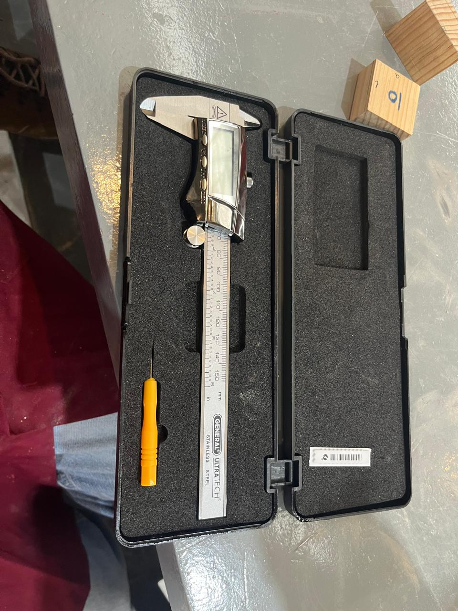
Figura 1: Vernier digital.
2.2. Micrómetro (Pálmer)
Dispositivo basado en un tornillo micrométrico diseñado para medir dimensiones con una precisión milimétrica superior (resolución de \(0.01\text{ mm}\) o \(0.001\text{ mm}\)). Cuenta con un trinquete de fricción para asegurar una fuerza de apriete constante y evitar deformaciones en la pieza.
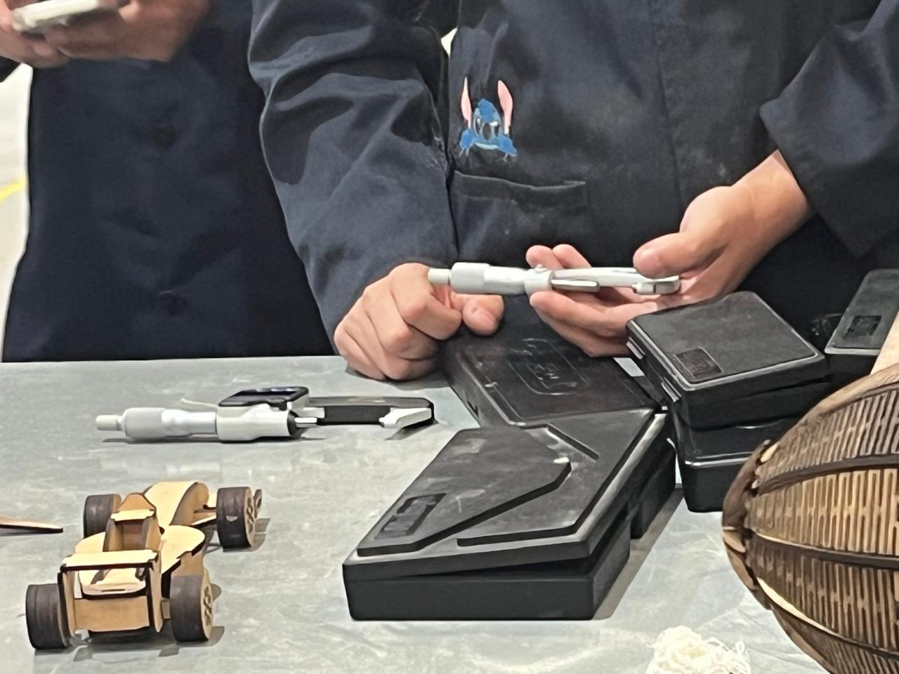
Figura 2: Micrómetro.
2.3. Registro Experimental de Mediciones en Cubos de Prueba
Mediciones con Micrómetro (Resolución en milésimas de milímetro, \(\text{mm}\))
| Intento / Lado | Lectura 1 (\(\text{mm}\)) | Lectura 2 (\(\text{mm}\)) | Promedio (\(\text{mm}\)) |
|---|---|---|---|
| Eje X | - | - | - |
| Eje Y | - | - | - |
| Eje Z | - | - | - |
Mediciones con Calibrador Vernier (Resolución en centésimas de milímetro, \(\text{mm}\))
| Intento / Lado | Lectura 1 (\(\text{mm}\)) | Lectura 2 (\(\text{mm}\)) | Promedio (\(\text{mm}\)) |
|---|---|---|---|
| Eje X | - | - | - |
| Eje Y | - | - | - |
| Eje Z | - | - | - |
Observaciones Metrológicas:
Se comprobó que el micrómetro ofrece mayor repetibilidad y menor margen de error en comparación con el calibrador vernier debido a su sistema de tornillo calibrado y su tope de fricción controlado.
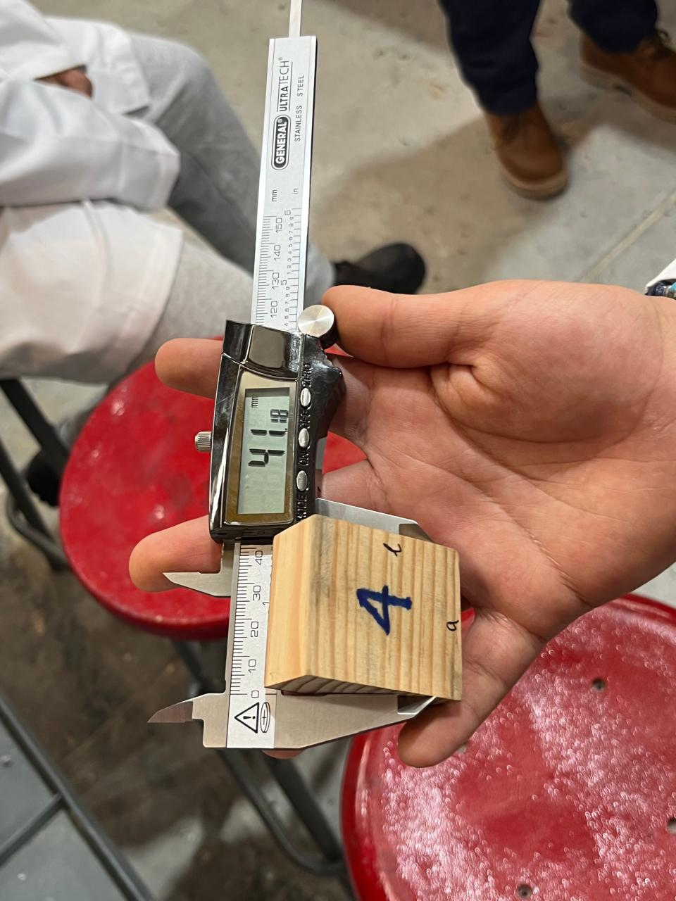
Figura 3: Cubo número 4 medido con el Vernier.
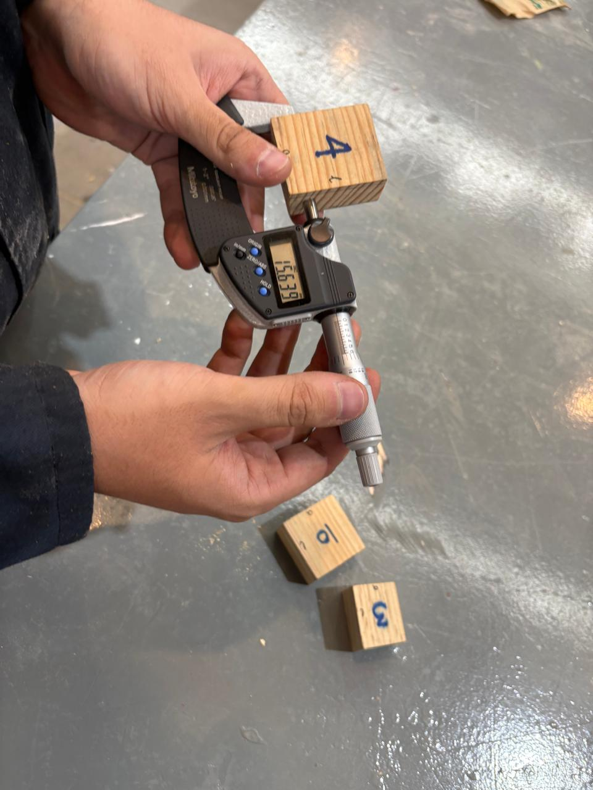
Figura 4: Cubo número 4 medido con el Micrómetro.
3. Maquinaria de Corte y Maquinado
3.1. Fresadora e Instrumentos de Corte
Diferencia Fundamental entre Fresa y Broca:
- Broca: Herramienta diseñada exclusivamente para realizar perforaciones axiales (hundimiento lineal vertical). Sus filos de corte se encuentran en la punta.
- Fresa: Herramienta multiproceso diseñada para realizar cortes tanto axiales como laterales y transversales. Posee filos tanto en la punta como en las paredes laterales, permitiendo contorneo, ranurado y planeado.
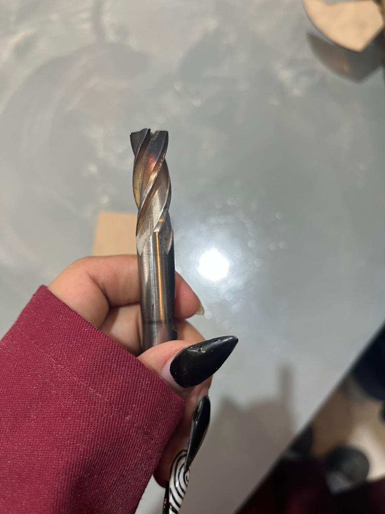
Figura 5: Inspección visual de una fresa de corte helicoidal.
Reglas de Operación y Parámetros Técnicos en el Fresado:
- Sentido de giro y avance: El avance del material debe realizarse en oposición al sentido de rotación de la fresa (fresado en concordancia o en oposición) para evitar tirones y asegurar la estabilidad del corte.
- Velocidad de corte (\(RPM\)): Depende directamente del material a mecanizar y del diámetro de la herramienta. Materiales blandos requieren mayores revoluciones; materiales duros exigen velocidades menores.
- Sujeción de la pieza: La pieza de trabajo debe estar firmemente asegurada en la mordaza de la fresadora mediante calzas de apoyo para evitar vibraciones o desprendimientos violentos.
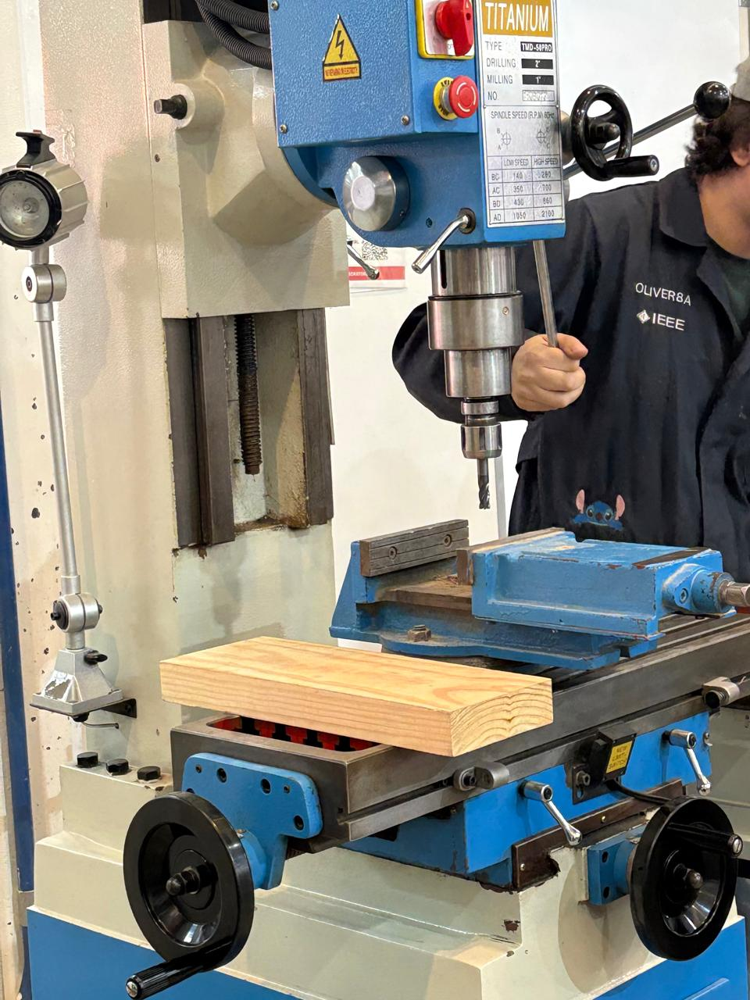
Figura 6: Máquina fresadora Titanium TMD-50PRO.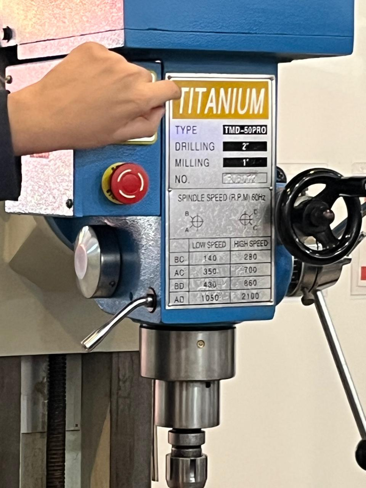
Figura 7: Panel de ajuste de velocidad de giro (RPM) de la fresadora.
3.2. Sierra de Cinta para Madera
Utilizada para cortes rectos o curvos en bloques o tablas de madera y plásticos. Cuenta con una hoja fina en forma de cinta continua que circula sobre poleas. Es indispensable mantener las manos alejadas de la línea de corte y usar la guía paralela para cortes longitudinales estables.
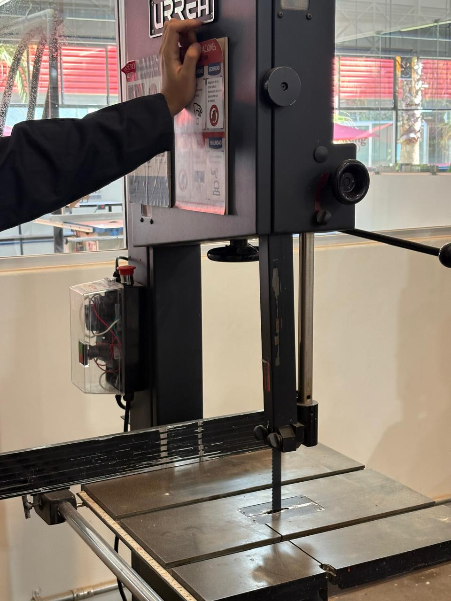
Figura 8: Sierra de cinta Urrea para cortes en madera.
4. Deformación y Corte de Lámina Metálica
4.1. Guillotina Mecánica Manual para Lámina
Herramienta de banco destinada al corte recto de láminas metálicas de calibres delgados. - Procedimiento: Se alinea la marca de trazo con la línea de corte de la cuchilla, se acciona el pisón de retención para evitar que la lámina vibre o se levante, y se aplica fuerza uniforme en la palanca de corte en un solo movimiento fluido.
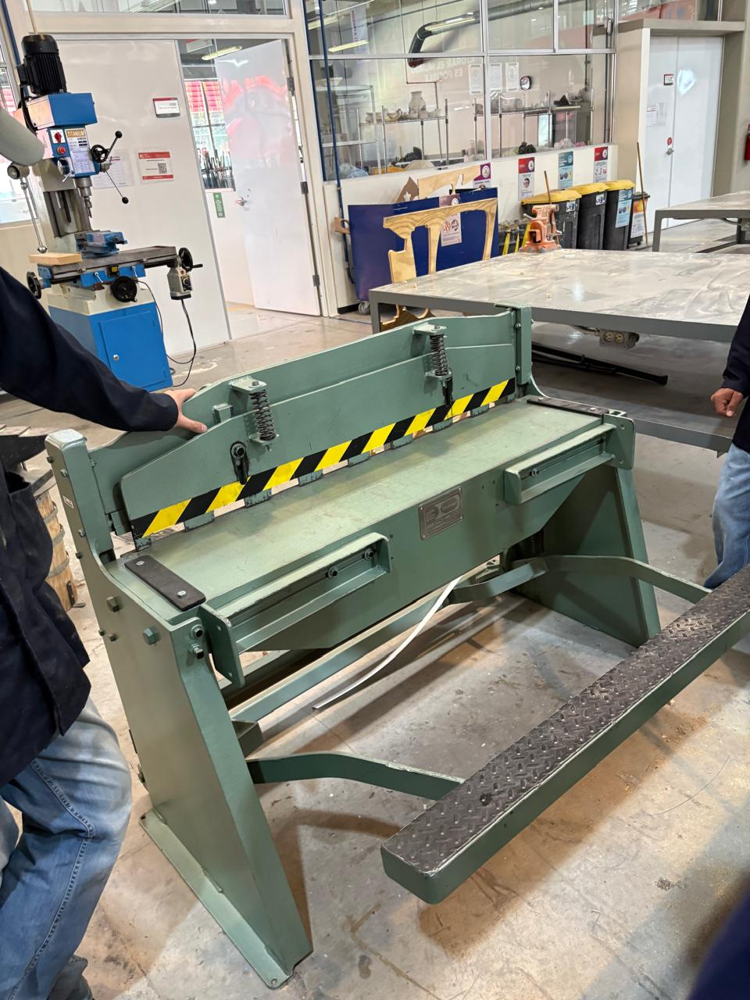
Figura 9: Guillotina mecánica manual para lámina metálica.
4.2. Dobladora de Lámina (Prensa de Doblado)
Equipo empleado para deformar plásticamente láminas metálicas formando ángulos precisos. - Operación: Se sujeta la lámina bajo la barra de presión superior y se acciona el faldón abatible para elevar el metal al ángulo de flexión deseado (por ejemplo, \(90^{\circ}\)), considerando siempre el factor de recuperación elástica (springback) del material.
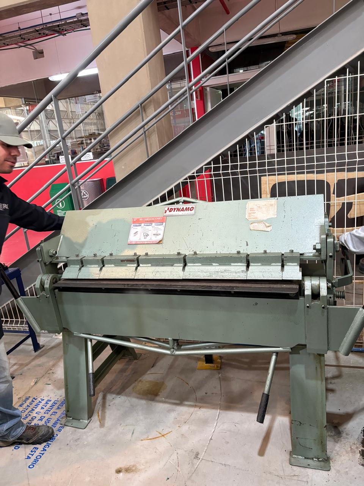
Figura 10: Dobladora Dynamo para láminas metálicas.
5. Procesos de Unión: Soldadora por Puntos
La soldadora por puntos es un proceso de unión por resistencia eléctrica donde dos láminas metálicas se traslapan y se presionan fuertemente entre dos electrodos de cobre. - Al aplicar una corriente eléctrica de alta intensidad y bajo voltaje durante un breve lapso de tiempo, la resistencia eléctrica propia del punto de contacto genera calor localizado (\(Q = I^2 R t\)), fundiendo y uniendo ambas placas de manera localizada sin necesidad de material de aporte.
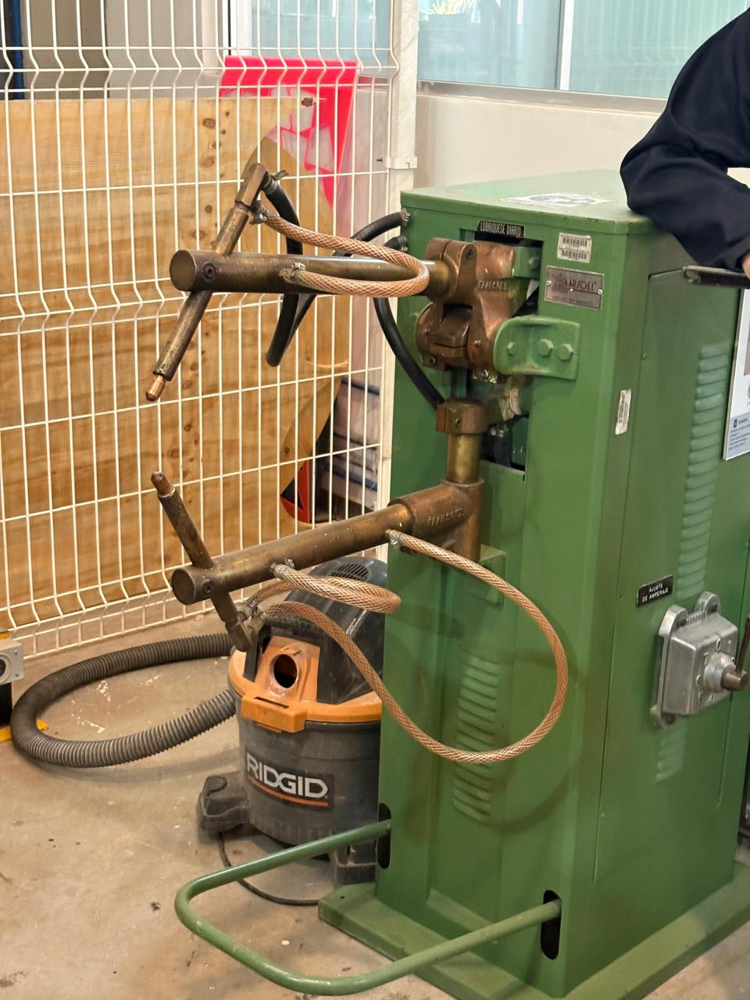
Figura 11: Equipo de soldadura por puntos por resistencia con electrodos de cobre y selector de amperaje.
6. Conclusión
Esta práctica en el IDIT permitió familiarizarnos de forma directa con la infraestructura del laboratorio. Comprendimos la importancia de dominar instrumentos de medición de alta precisión como el micrómetro y el calibrador vernier para el control de calidad, así como el funcionamiento, reglas operativas y medidas de seguridad de las principales máquinas herramientas empleadas en los procesos de manufactura mecatrónica.